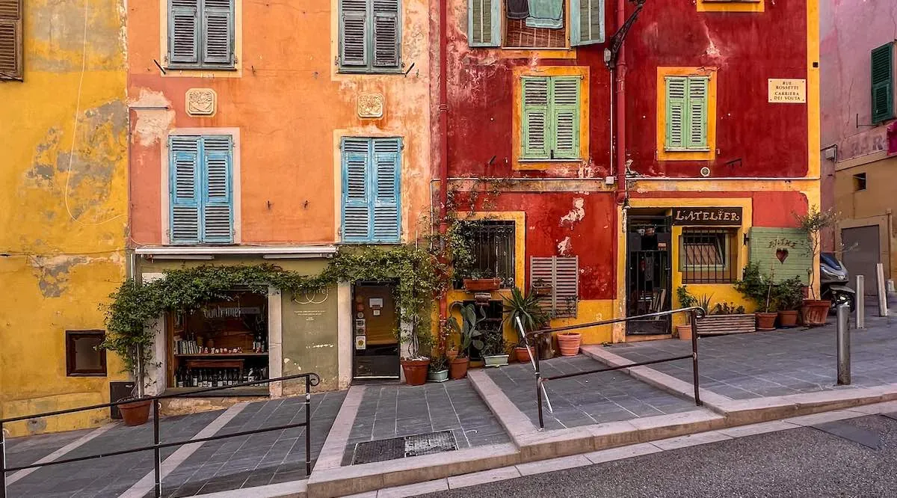
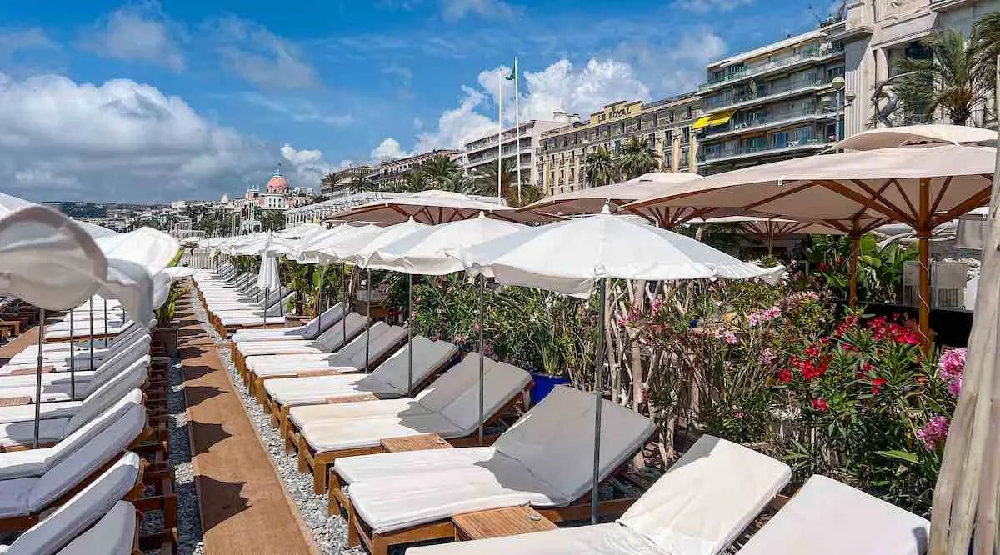
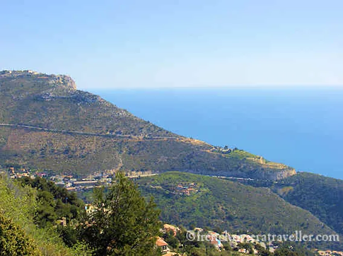
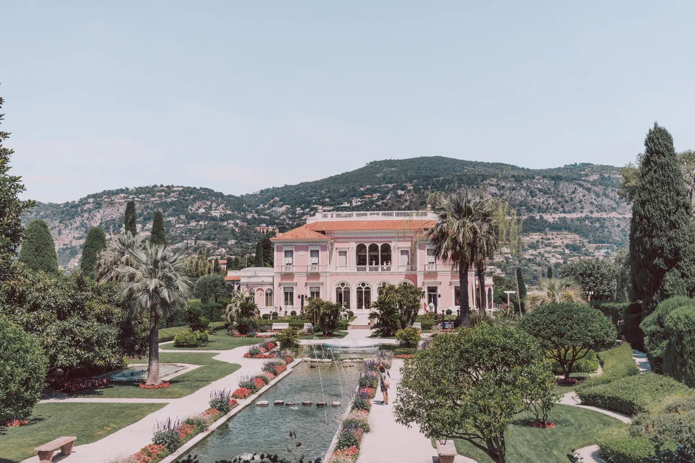
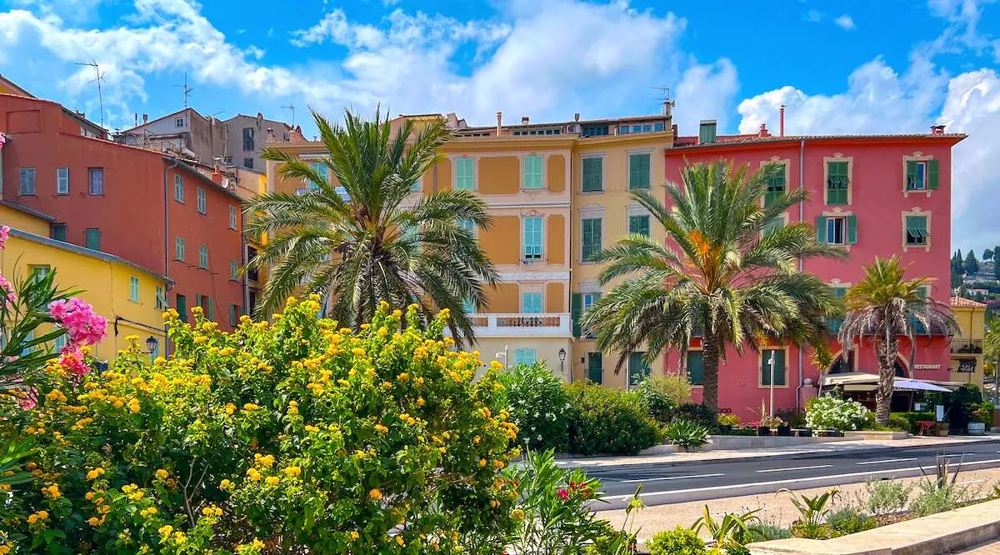

Nice & Côte d'Azur
Weekend anchored on JAN ★ at 19:30 Saturday — Chef Jan Hendrik van der Westhuizen, 1 Michelin star, 20 seats. No car needed: TER + Lignes d'Azur reaches Cannes to Menton from €1.70.[67]
June Weather
☀ 24–27 °C daytime
🌙 17 °C nights
🌊 23 °C sea
⛅ ~12 h sunshine/day
🌧 ~4 rainy days[63]





Socca
Wood-fired chickpea galette — pure, hot, cheap. The canonical Niçoise street food.[40]
→ Chez Pipo or René Socca
Pissaladière
Caramelised onion + anchovy + Niçois-olive tart on thin crust.
⚠ No cheese — ever.
Pan-bagnat
Round bread soaked with salade niçoise fillings — takeaway single portion.
Salade niçoise
Raw veg + hard-boiled egg + tuna/anchovy. Jacques Médecin codified it, 1972.[41]
⚠ No potato. No green beans.
Petits farcis
Courgette, tomato, onion stuffed with herbs and meat.
Tourte de blettes
Chard tart with raisins + pine nuts. Sweet or savoury — the definitive Niçoise vegetable-as-dessert oddity.[48]

~600 works · 57 sculptures (world's largest public Matisse-sculpture collection)[26]
Miró · Giacometti · Calder · Braque
France's leading private art foundation[30]
4-day Nice Museums Pass: €15 — covers Matisse + Chagall + all municipal museums. Pays for itself at 2 visits.[25]
Plage de la Mala
Cap d'Ail · pebble · cliff-walled cove · long staircase keeps crowds thin · cleanest water in the region[54]
Plage des Marinières
Villefranche-sur-Mer · sand · ~1 km bay · shallow · locals' default[56]
Paloma Beach
Saint-Jean-Cap-Ferrat east side · end of the cape's most photogenic stretch[53]
Plage de la Garoupe
Cap d'Antibes · fine sand · crystal-clear · entrance to the coastal path[55]
Nice in town
Pebble · 22 free public sections along 7 km · private clubs €30–90/day[10]
TER Coastal Train from Nice-Ville
| Destination | Time | Fare |
|---|---|---|
| Villefranche | 5 min | €2.10 |
| Monaco | 20 min | €4.40 |
| Antibes | 25 min | €5.20 |
| Cannes | 40 min | €7.90 |
| Menton | 40 min | ~€6 |
Every ~15 min until 22:00[67]
Lignes d'Azur City Fares
| Ticket | Price |
|---|---|
| Single (74 min) | €1.70 |
| 24-hour pass | €7.00 |
| 10-trip card | €15.00 |
| Airport T2 tram | €1.70 |
T2 airport → centre 20–30 min, every 7–8 min[70]
#15 → Villefranche + Cap Ferrat
#82/#602 → Èze Village (hilltop)
#600 → Èze-sur-Mer ≠ village!
#600 → Monaco · Menton (15 min headway)
What to Skip
- MAMAC — closed Jan 2024 through ~2028 (renovation)[28]
- Monaco on June 6–7 — Grand Prix qualifying + race[76]
- Bus #600 to "Èze" — stops at sea-level Èze-sur-Mer, not the hilltop village[13]
- Salade niçoise with potato or green beans — Parisian remix[41]
- Calanques National Park — hours west of Nice, day trip impossible[66]
- Vélo Bleu bike share — dead; use Pony or Lime e-bikes instead[82]
Where to Stay
Vieux Nice — from ~€160/night. Walk to JAN. Earplugs advised.
Carré d'Or — boutique-hotel band, central and quieter.
Promenade des Anglais — ~17% below city average (~€143).[80]